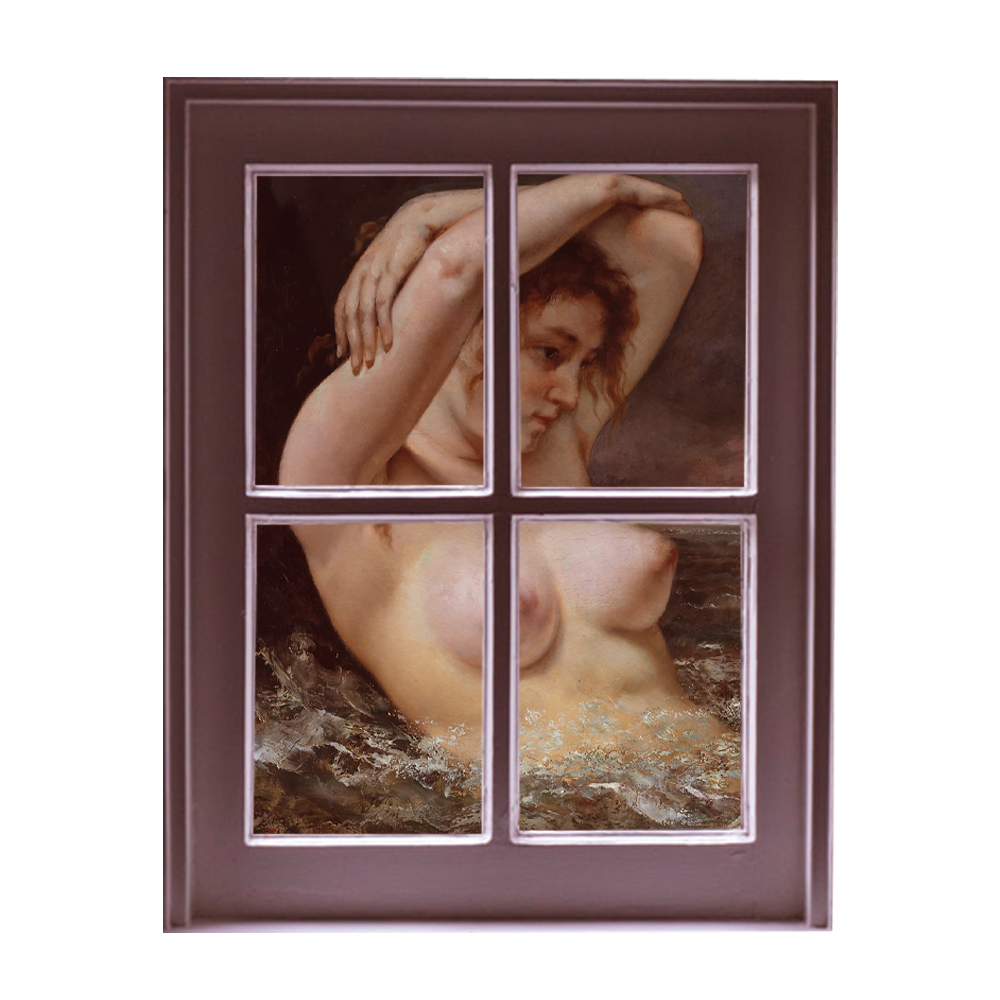
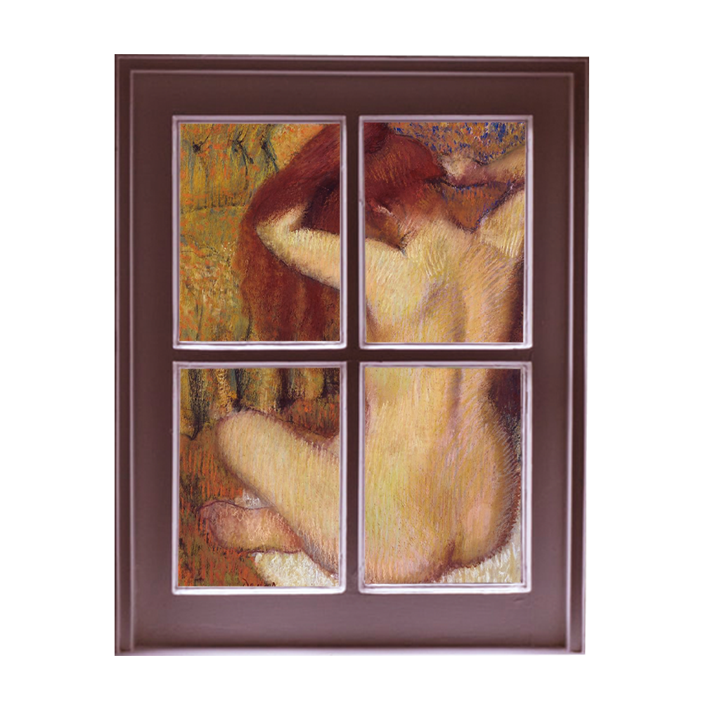

The Society of the male maze
A man doesn’t even have to be in the room for a woman to feel his gaze. How can we rid ourselves of something so internalized?
CONTENT WARNING: This article discusses voyeurism, stalking, sexual harassment and contains brief mentions of bulimia, anorexia, depression, anxiety and disordered eating.
When I pull my clothes on in front of my bedroom window in the morning, I wonder if the man who watches me from his apartment across the street thinks I’m sexy. When I pour a glass of water in the glow of my refrigerator light, I wonder if he’s counting how many cups I’ve had today, whether he cares about my health. When I do crunches on my living room floor, I wonder if he likes girls who workout. I do one more for him, just in case.
By now, he probably knows how I take my coffee. What TV shows I watch. I wonder if he knows my name.
I name him Will, after the first man who watched me without my consent.
I was 14 the first time Will texted me—he wanted me to send him nudes. I don’t remember how many times I said no, but I remember him threatening to tell everyone I was a slut, blackmailing me with my own pictures, so I did it. I felt like a hostage in my own body, paying a ransom that kept increasing every time I forked over the cash. For years, he kept asking, kept threatening. The anxiety of him ate away at my insides with angry teeth.
I couldn’t separate us. He was no longer just a boy who sat beside me in English class and texted me whenever he was horny. He lived inside my head. Everything I was belonged to him.
A 2004 study by Psychology of Women Quarterly on the male gaze—the idea that our norms and societal expectations are dictated by the male perspective—found that a man doesn’t even need to be present for a woman to feel the effects of it.
Taslim Alani-Verjee, a clinical psychologist and the director and founder of the Silm Centre for Mental Health, says that women are constantly mindful of how we might not be meeting unrealistic expectations, such as beauty, weight and success standards—be that conscious or subconscious. “Even while there is no man in the room, the perception of his gaze is enough to make women feel self-conscious and engage in self-monitoring”

Will’s constant presence in my text messages became a voice inside my head. I was always viewing myself through his eyes—wondering what he would think of what I was wearing and whether he would take it as an invitation to ask me for pictures, or if he would be too disgusted with my choices to even look at me.
Without realizing, I was dressing to satisfy him, eating less and less to look hot for him, trying to fit the expectations of what an attractive woman looked like even if I didn’t want him to be attracted to me. When I moved to Toronto, I still felt his eyes on me, cities away. The voice became less distinctly his, but it was still there. There was always a man present, the pressure to satisfy him sitting inside of me like a calcified mass. I didn’t want to be wanted, but I wanted to please. If he was going to watch me, I needed him to enjoy the show.
Taylor Palmer first became aware of the male gaze when her classmates began shaving their legs. “I didn’t want to do it, mostly because I was lazy, but I felt like I had to and I couldn’t really place why,” she says. The idea that she had to do certain things, often with no reason, became a constant theme throughout her life. She found herself dressing in ways that weren’t necessarily what she liked but what she thought others would like. She put pressure on herself to be funnier and more likeable in social settings. She even felt herself pretending to be attracted to men more than she was to women, because that’s what was expected of her.
As a response to threats and trauma, Alani-Verjee says that these methods of conformity are sometimes a protective action taken by women to shield themselves. For others, they seek to draw the least amount of attention to themselves as possible by doing things like wearing baggy clothing.
“The drive to belong and feel accepted is one of our strongest drives,” she says. “When we don’t feel accepted or included, this can lead to feelings of isolation, shame, rejection and potentially anxiety.”
Multiple studies on the internalized male gaze have found that among anxiety, other effects include disordered eating, a decreased ability to focus on cognitive tasks, body shame and even a higher likelihood of smoking. What seems like just a voice in our head can quickly become a danger to women and their sense of self. My belief that I had to satisfy the man in my head was turning into a hatred of myself for never being able to live up to those standards. For Palmer, it turned into shame about her sense of style and the things she liked. For many others, it can manifest into extremes like anorexia nervosa, bulimia and depression.
Lina Elsaadi was taught that in a sexual context, her body was between her, God and her husband. “I didn’t feel like I had any ownership over my body,” she says. “I believed that showing any part of it was sexualizing myself.” She became hyper-aware of her skin; her bare legs an invitation for sex, a tanktop a reason to be called a whore. A lot of these beliefs came from her upbringing in a Muslim household, but they stayed with her even when she moved to Toronto for university. She was choosing clothes based on what felt the least shameful, as opposed to what felt more comfortable, opting for thick jeans over shorts in the sweltering heat.
“Something had to change, so I began thinking about my body in terms of its functionality and purpose instead of how sexy it was.” Boobs were made to house mammary glands, her thighs made to carry her. Her body was no longer a warehouse of parts made for male consumption, but a working network with the sole purpose of keeping her alive.

This coping mechanism is not far off from what experts have found in their research on preventing internalized objectification. A 2011 study recommended implementing embodied experiences as a solution to promote a functional view of the body, such as meditation techniques like “body scans,” where the subject is asked to pull focus to their body, one part at a time.
For Palmer, the bulk of her healing came from acknowledging that she could do things even if they didn’t fall within the norm, like wearing clothes that she liked versus what she thought people would enjoy. “Coming out of [the male gaze] was a retroactive experience for me. It was so ingrained in my life that I didn’t even notice I was operating under it until I wasn’t.”
While the practice of ridding herself from it wasn’t necessarily a conscious one, it was still impactful. “I didn’t know exactly what I was doing, but I knew I was choosing the clothes that made me most comfortable, I knew I was doing things that I actually enjoyed.” Her relief of feeling at home in her own presence was palpable. “It was like I was finally at peace.”
The man who watches me isn’t real. He’s a fragment of my internalized objectification; the voice telling me to be hotter, to lose a few pounds. To show off that pretty ass of yours. I’m trying to coax him down by pushing my stomach out, curling my spine and wearing ugly t-shirts. By telling my thighs that they don’t need to be a size two, by letting myself breathe.
As I peel my clothes off at night, I tell myself I’m sexy. I drink my third litre of water. Sometimes I do crunches and sometimes I don’t. I take care of myself and make my coffee with cream and sugar. I tell myself that I am happy, healthy and whole.